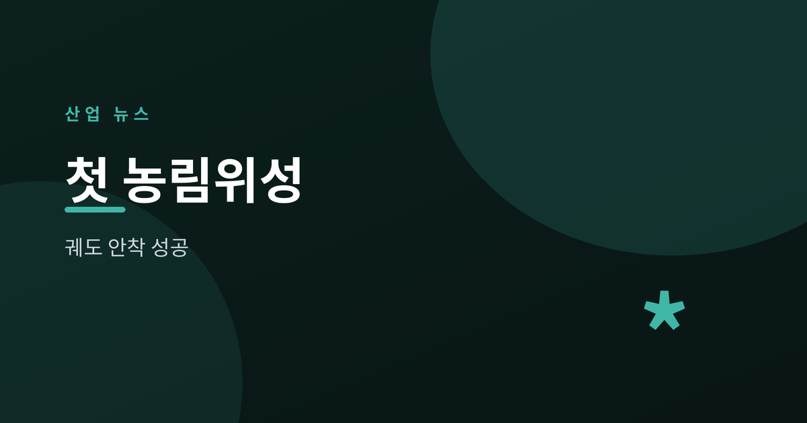
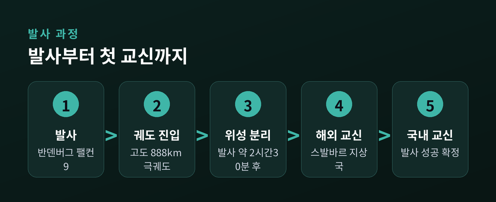
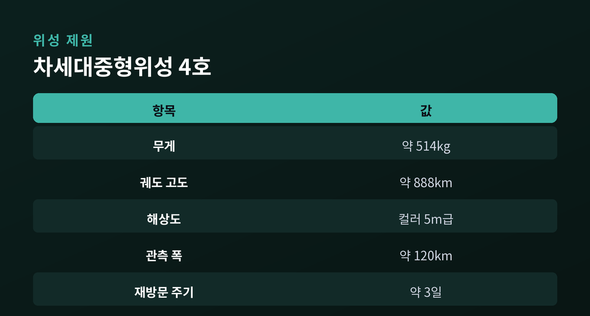
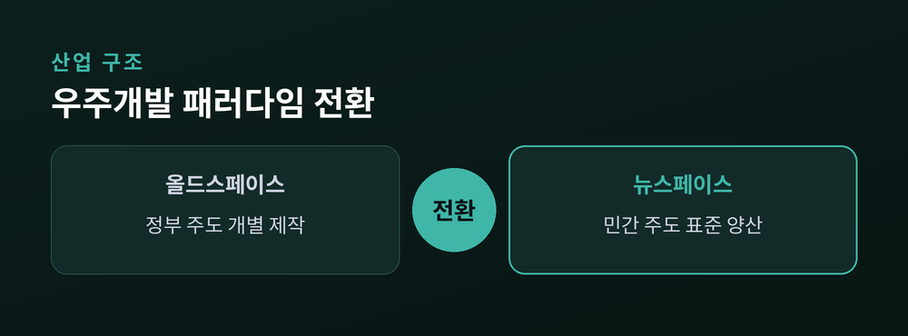
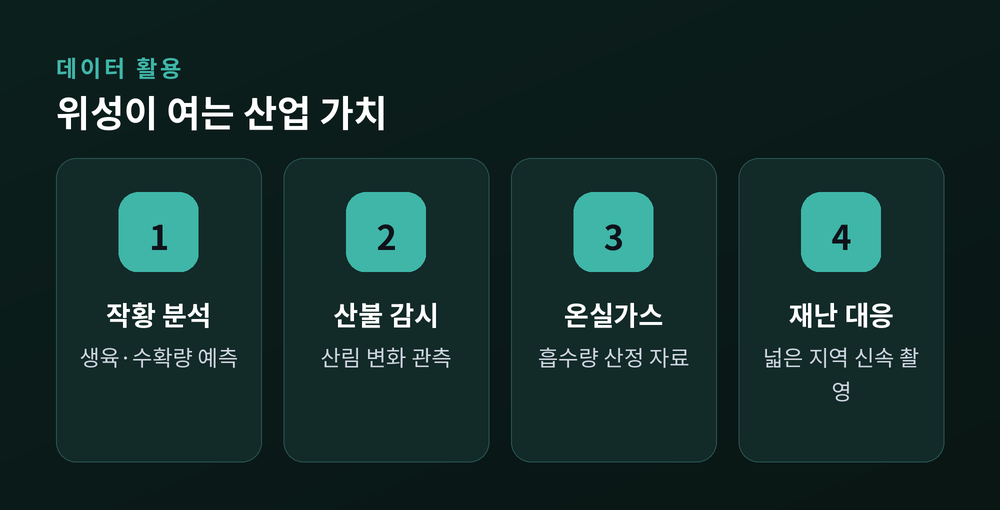

차세대중형위성 4호 발사 성공이 남긴 것
2026년 7월 7일 오후, 미국 캘리포니아 반덴버그 우주군기지에서 스페이스X의 팰컨9 발사체가 하늘로 솟았습니다. 이 발사체에 실린 것은 한국이 독자 개발한 지구관측 위성 '차세대중형위성 4호'였습니다. 위성은 발사 약 2시간 30분 뒤 발사체에서 정상 분리됐고, 노르웨이 스발바르 지상국과 첫 교신을 마친 뒤 목표 고도인 약 888km 궤도에 안착했습니다.
주목할 점은 이 위성이 국내 최초의 '농림위성', 즉 농업과 산림 관측을 전담하는 위성이라는 사실입니다. 반도체와 인공지능이 산업 뉴스의 대부분을 차지하는 시대에, 조용히 궤도에 오른 이 500kg급 위성 한 대는 한국 우주산업이 어디까지 왔는지를 보여주는 상징이 되었습니다. 오늘은 이 발사가 왜 단순한 '위성 하나'가 아닌지 해설해 드리겠습니다.

이번 발사의 주인공은 무게 514kg의 차세대중형위성 4호입니다. 위성은 한국시간 7월 7일 오후 4시 12분 반덴버그 기지에서 팰컨9에 실려 발사됐습니다. 발사 자체는 상업 발사체를 이용했지만, 위성 본체와 탑재체 개발은 한국이 주도했다는 점이 핵심입니다.
발사 후 위성은 발사체에서 분리돼 극궤도에 진입했고, 해외 지상국과 국내 지상국을 차례로 거치며 교신에 성공했습니다. 위성이 지상과 정상적으로 신호를 주고받았다는 것은 전력·통신·자세제어 등 핵심 시스템이 모두 정상 작동한다는 뜻으로, 발사 성공을 확정 짓는 가장 중요한 단계입니다.

차세대중형위성 4호는 지상의 5m 크기 물체를 컬러로 구분할 수 있는 광학탑재체를 갖췄습니다. 관측 폭은 약 120km에 이르러, 한 번에 넓은 지역을 훑을 수 있습니다. 이 조합 덕분에 위성은 한반도 전역을 약 3일 주기로 촬영할 수 있습니다.
이 사양은 '농업과 산림을 계속 지켜본다'는 목적에 최적화돼 있습니다. 도시 건물을 세밀히 들여다보는 정찰위성과 달리, 농림위성은 넓은 면적을 자주 촬영해 작물이 자라는 상태나 산림의 변화를 시계열로 추적하는 데 강점이 있습니다. 초고해상도보다 '넓게, 자주'가 이 위성의 설계 철학인 셈입니다.
농업과 산림은 계절과 기상에 따라 하루가 다르게 변합니다. 며칠 단위로 같은 지역을 반복 촬영할 수 있어야 작황 변화나 산불 피해를 제때 포착할 수 있기 때문에, 3일 주기라는 재방문 성능이 이 위성의 가치를 결정합니다.

차세대중형위성 사업의 진짜 의미는 '누가 만들었는가'에 있습니다. 이 프로그램은 한국항공우주연구원이 1호기에서 핵심 기술을 개발한 뒤, 이를 민간 기업에 이전해 2호기부터는 민간 기업이 주도해 위성을 개발하도록 설계됐습니다. 정부가 모든 것을 직접 만들던 '올드스페이스'에서, 민간이 설계·제작을 맡는 '뉴스페이스'로 넘어가는 흐름입니다.
핵심은 500kg급 표준 플랫폼입니다. 위성의 뼈대에 해당하는 본체를 표준화하면, 탑재체만 바꿔 다양한 임무의 위성을 반복 제작할 수 있습니다. 자동차로 치면 같은 플랫폼 위에 여러 차종을 올리는 방식으로, 개발 비용과 기간을 크게 줄이고 위성을 사실상 '양산'할 수 있는 기반이 됩니다.
이런 구조는 우주산업의 경제성을 근본적으로 바꿉니다. 한 대를 수년에 걸쳐 만드는 방식으로는 시장이 열리지 않지만, 검증된 플랫폼을 반복 생산하면 국내 수요를 넘어 수출까지 노릴 수 있습니다.

위성은 발사가 끝이 아니라 시작입니다. 차세대중형위성 4호는 약 4개월간의 초기 운영·점검을 거친 뒤, 2027년부터 본격적인 관측 임무에 들어갑니다. 이때부터 쏟아질 영상 데이터는 여러 산업과 공공 분야에서 활용됩니다.
대표적으로 작황 분석과 수확량 예측이 있습니다. 넓은 농경지의 생육 상태를 위성으로 파악하면 식량 수급을 미리 관리할 수 있습니다. 산림 분야에서는 산불 감시와 산림 자원 변화 관측, 나아가 온실가스 흡수량 산정의 기초 자료로도 쓰일 수 있습니다. 홍수나 산사태 같은 재난 상황에서 넓은 지역을 신속히 촬영하는 것도 이 위성의 몫입니다.

이번 발사가 던지는 질문은 '한 대의 성공' 그 이상입니다. 관건은 표준 플랫폼을 얼마나 빠르고 값싸게 반복 제작하고, 그렇게 쌓인 데이터를 실제 산업 현장에서 돈이 되는 서비스로 연결할 수 있느냐입니다. 위성을 쏘아 올리는 능력과 위성 데이터를 파는 능력은 별개의 과제입니다.
민간 기업들은 위성 양산을 넘어 항공기와 위성을 묶은 '패키지형 수출'까지 겨냥하고 있습니다. 발사체·본체·탑재체·데이터 서비스로 이어지는 우주 밸류체인에서 한국이 어느 고리를 쥐게 될지가, 앞으로 몇 년간 지켜볼 대목입니다.
정리하면, 차세대중형위성 4호는 '농업과 산림을 지켜보는 눈'인 동시에, 한국 우주산업이 정부 주도에서 민간 주도로, 개별 제작에서 표준 양산으로 넘어가는 전환점을 상징하는 위성입니다. 조용한 발사였지만, 그 함의는 결코 작지 않습니다.
참고: 헤럴드경제, 경향신문, 이투데이, 부산일보, YTN, 뉴스핌, 아주경제, 파이낸셜뉴스